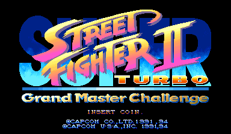
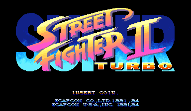
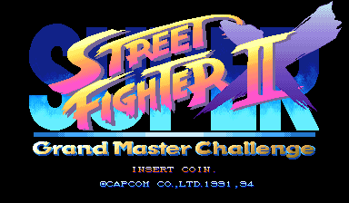
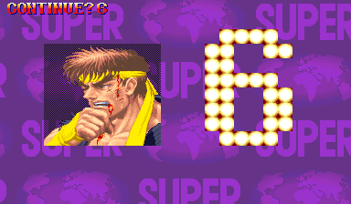
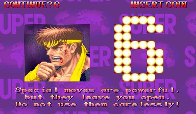
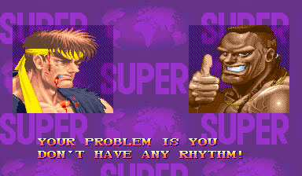
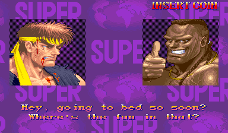
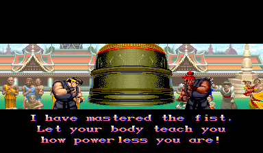

Super Street Fighter II Turbo: Grand Master Challenge
Japan's Super Turbo, in English
Screenshots

US Super Turbo

Japanese Super Turbo X

US Super Turbo

Grand Master Challenge

US Super Turbo

Grand Master Challenge


About this patch
Super Turbo came in two versions. Japan got Super Street Fighter II X, the one competitive players swear by. The rest of the world got a slightly different game: it plays differently, the continue screen is bare, most of the win quotes are gone, the endings are shorter, and Akuma's story is missing. Japan's version, of course, was in Japanese.
Grand Master Challenge is Japan's game in English. The fighting is untouched. Everything you read is new: all 136 win quotes, the strategy tips on the continue screen, the full endings, and Akuma's dialogue, translated fresh from the Japanese with Capcom's own English as the style guide.
It runs anywhere Super Turbo does: MAME, HBMAME, MiSTer, or a real CPS-2 board. The patch keeps the ROM's original sizes and key, so it drops in over the stock Japanese set.
What's changed
- Japan's game, exactly as it plays in Japan
- The Grand Master Challenge title, and a US region
- Balrog, Vega, M. Bison and Akuma, the names you know
- All 136 win quotes in English
- The continue screen's strategy tips in English
- Every ending in full, in English, including Akuma's
- Akuma's intro dialogue, cut from the export game
Compared with the US Super Turbo
How the three compare.
| US Super Turbo | Japan | Grand Master Challenge | |
|---|---|---|---|
| Gameplay | Export version | Japanese version | Japanese version |
| Language | English | Japanese | English |
| Title | Super Street Fighter II Turbo | Super Street Fighter II X: Grand Master Challenge | Super Street Fighter II Turbo: Grand Master Challenge |
| Character names | Balrog, Vega, M. Bison, Akuma | M. Bison, Balrog, Vega, Gouki | Balrog, Vega, M. Bison, Akuma |
| Win quotes | 20 | 136 | 136 |
| Continue screen tips | None | Yes | Yes |
| Endings | Shortened | Full | Full |
| Akuma's ending | Blank | Yes | Yes |
| Akuma's intro dialogue | Cut | Yes | Yes |
| Free Play | Yes | No | Yes |
Downloads
You need your own dump of Super Street Fighter II X: Grand Master Challenge (Japan 940311) as the MAME
set ssf2xj.zip. Each zip includes a readme.txt with
full instructions.
How to apply (ROM patch)
unzip ssf2t-gmc-rc1-ips.zip -d ssf2xj-patch
cd ssf2xj-patch
python3 apply.py /path/to/ssf2xj.zipThis checks every file against the checksums below, then writes
ssf2xj_patched.zip. Rename it to ssf2xj.zip
and put it ahead of the stock set in your MAME rompath. Alternatively, apply each
file in ips/ with any IPS patcher (Flips, Lunar IPS, …) to the ROM file
of the same name and re-zip the set yourself.
MAME reports checksum warnings for the patched program ROMs when loading. That is expected, and the game runs normally.
MiSTer
Copy the _Arcade/ folder from the MRA download to the root of your MiSTer SD card (the MRA lands in _Arcade/_Translations/), or copy Super Street Fighter II Turbo Grand Master Challenge (English Restoration).mra anywhere under _Arcade/, and have the stock, unmodified romset at
games/mame/ssf2xj.zip (split MAME sets also need qsound.zip).
You need Jotego's jtcps2 core, which the standard MiSTer downloader
(update_all) installs automatically.
The MRA references your original romset and applies the restoration in memory
while the game loads, so nothing on your SD card is modified. The restoration keeps
its own settings and saves under the setname ssf2tgmc.
HBMAME
This restoration also has an HBMAME
set definition, ssf2tgmc. The definition is generated with the
restoration; an upstream HBMAME submission is pending, so for now you add it to your own
HBMAME build.
To build the set from your own dump, run the IPS download's apply script with
--hbmame:
python3 apply.py /path/to/ssf2xj.zip --hbmameThis writes ssf2tgmc.zip; put it in HBMAME's
roms/ folder next to your stock ssf2xj.zip. Unlike the
MAME route above, the set loads with no checksum warnings, because HBMAME's set definition
carries the patched checksums.
Changed ROMs
| File | Size | Original CRC32 | Patched CRC32 |
|---|---|---|---|
| sfx.13m | 2.0 MB | cf94d275 | 75dac0eb |
| sfx.15m | 2.0 MB | 5eb703af | 84dcc039 |
| sfx.17m | 2.0 MB | ffa60e0f | bfcaf206 |
| sfx.19m | 2.0 MB | 34e825c5 | 13a55fd3 |
| sfxj.03d | 512 KB | 50b52b37 | deacc6a6 |
| sfxj.04a | 512 KB | af7767b4 | 86104c3a |
| sfxj.08 | 512 KB | 2de76f10 | ea0d1d90 |
Related projects
- arcade-projects request thread, the request this project set out to answer
- CPS+, companion project: the arranged Anniversary Edition and HD Remix soundtracks for Super Turbo on MiSTer
Notes
- MAME shows checksum warnings for the seven patched files. That's expected; the game plays normally. HBMAME with the ssf2tgmc set definition loads it without them.
- Fan work, unaffiliated with Capcom. The patch contains no ROM data; you need your own dump of the Japanese set.